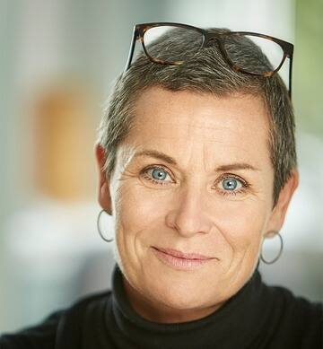

Theme and Keynotes
Theme for the conference: The power of music – moving towards the core of GIM
The focus of the one-day preconference: GIM and trauma healing
The conference will honor the spiritual qualities and affordances of music as the center of the GIM method, and the ways in which the music moves and transforms our body, emotions, mind, and spirit and changes our ways of being in relationships and as citizens. The urgency of living in a world facing global conflicts, climate crisis, trauma and terror challenges us in both private life and on collective levels. How can the music empower GIM clients to find their path?
In order to develop the field of practice and theory in GIM, we would like the conference to contribute to a deeper understanding of the power of music and how it works out in the GIM experience. We hope to increase the clarity and comprehension when presenting the special role of music in GIM to new generations of students and clients as well as to clinical leaders and founders, helping GIM to grow and spread in the world.
The conference participants are asked to dive into many aspects and facets of the music experience of Guided Imagery and Music, Music and Imagery and other modifications. We would like all contributions to touch at the music itself. Also, philosophical and music psychological contributions are invited. The call for abstracts opens for original research, theoretical papers, roundtables, workshops and posters.
Welcome to a conference brimming with music, dialogue and empowerment of the growing GIM community!
Keynotes
Together in Music: Phenomenological Explorations of Musical Absorption
By Simon Høffding
In this talk, I present some key findings from my phenomenological investigations on musical expertise as summed up in my monograph A phenomenology of Musical Absorption. For the last 8 years or so, I have been touring with, interviewing, and conducting experiments with The Danish String Quartet (DSQ) – one of the world’s leading classical ensembles today. Having performed together as a tightly knit group for 10-15.000 hours has, I show, changed the structure of their consciousness. Their minds have become resilient to stress, robust yet flexible, but also subject to mental experimentation into zones of dissociation, out-of-body experience, hyper-reflection, amnesia, and sleep-like or blackout-like states.
After presenting a general topography of such musical absorption, I focus on the DSQ’s sense of togetherness and analyze the different ways in which they partake in a single performance and a single mind. Here it becomes evident that processes of cognitive empathy, of “putting oneself in the other’s musical shoes” cannot essentially explain the constitution of such a shared mind, which is better understood through analyses of pre-reflective bodily self-awareness and a sense of resonant affect.
Finally, I ask whether we can find any important structural similarities between the musical journeys of such an expert ensemble and that of therapist and client’s relation and development over the course of GIM interventions.
Simon Høffdingis a post doctoral researcher at the Department of Musicology and the RITMO Centre for Interdisciplinary Studies in Rhythm, Time and Motion, University of Oslo. He obtained his ph.D from the Centre for Subjectivity Research, University of Copenhagen in 2015 and has since held positions at the Interactive Minds Centre, University of Aarhus, and at the Department of Psychology, University of Copenhagen. His main interests are in phenomenology, 4E cognition, (bodily) self‐awareness, aesthetic experiences, musical absorption, expertise studies, shared minds, and improvisation. He pursues these interests through interdisciplinary methodologies combining phenomenological analysis, ethnographic fieldwork and psychophysiological experiments. This work is published in Phenomenology and the Cognitive Sciences, Journal of Consciousness Studies, Topoi, Synthese, Mind & Language, and Musicae Scientiae and in his first monograph, A Phenomenology of Musical Absorption (Palgrave Macmillan).
Tones of Devotion and Freedom – A Musicians Perspective
By Katrine Gislinge
Based on her experiences as an international renowned chamber music and solo concert pianist, Katrine Gislinge will unfold her thoughts on music and the way it touches us. She will tell how life with heart blood and crises has been interwoven with her explorations of many facets of music. She will focus on her definition of freedom of expression, and how this freedom can be heard in the music. This will be illustrated with excerpts of recordings of GIM-repertoire music pieces from concerts with different musicians. She will also talk about the phenomenon of the point of surrender, opening for an experience of being one with music – with a parallel to the GIM experience.
In 2019 Katrine was a host in the Danish radio series “Music in the laboratory”. One of the broadcasts were dedicated to classical music and health, in which she interviewed Bolette Beck about GIM. In this keynote the roles will be reversed, as the keynote will unfold as a dialogue.
Katrine Gislinge is a concert pianist from the Royal Danish Music Academy (1992), who has performed as soloist and in chamber music concerts in all parts of Europe and USA during three decades. Katrine Gislinge has an extensive work as a chamber musician at both chamber music festivals and as a permanent member of "The Danish Piano Trio", which from the beginning of their collaboration has received great recognition. Katrine Gislinge's repertoire ranges from Bach to the very latest music; her most recent recording being Mozarts piano concerts 11-13 with the Swedish Stenhammer Quartet. Katrine Gislinge has collaborated with musicians and conductors such as, Gustavo Dudamel, Gidon Kremer, Augustin Dumais, Jin Wang, Kurt Sanderling, Andreas Brantelied and more, and played at festivals such as Lockenhaus, Bergen, Trondheim, Cervantino, London, radio France Montpellier, as well as in concert halls such as Carnegie Hall, Concertgebouw etc. Katrine has always been interested in the deeper dimensions of music and existence and currently studies philosophy at Copenhagen University.
Discovering A Musical Treasure
By Lisa Summer & Lars Ole Bonde
Helen Bonny developed a number of music programs for individual GIM sessions as well as short programs and playlists for guided music travels and specific goals. Her knowledge of the music repertoire was deep and comprehensive. Recently, Lisa Summer discovered a cassette deck from 1981 with the very neutral title ”Experimental #1”. Summer shared her findings with Lars Ole Bonde, and together they have explored the cassette. The repertoire includes music by Bruch, Elgar, Ravel, Rachmaninoff, Villa-Lobos, Schumann, Strauss, Mendelssohn and Wagner. In the keynote, we will contextualize “Experimental #1" in the history of GIM, present selected findings and give recommendations for the use of this interesting, intense and demanding collection of music. Furthermore, we will discuss whether each side on the cassette presents a (draft) program, or it is one program with potential alternative selections. Finally, we will discuss if/how this music can be a ’new’ addition to the GIM repertoire.
Lisa Summer, PhD, LMHC, MT-BC, FAMI
In the 1980’s and 90’s Lisa Summer developed the Continuum Model of GIM in her music therapy practice with adults with anxiety, mood, and addiction disorders while serving as the Director of Helen Bonny’s GIM training program. Lisa has chronicled her clinical practice and theory in articles, book chapters, and a doctoral research study, Client Perspectives on the Music in GIM. With her opera composer husband, Joseph Summer, she authored Music: The New Age Elixir, a critique of New Age music healing practices (Prometheus Books). In addition, she has edited Helen Bonny’s publications and lectures for Music and Consciousness: The Evolution of GIM and a special issue of Voices [Volume 10(3)] dedicated to the life and work of Helen Bonny. She has been Professor/Director of Music Therapy at Anna Maria College since 1995 and she directs the Institute for Music and Consciousness which holds ongoing training in the Continuum Model in the USA, Beijing, and Seoul.
Lars Ole Bonde, PhD, DMTF, FAMI
is a musicologist, a certified music therapist and a certified clinical supervisor. In the 1980s he was associate professor in musicology at Aalborg University, and 1986-1995 he was a music producer in the Danish Broadcasting Corporation (Danmarks Radio) and a free lance opera and concert producer. From 1991, he worked as teacher and researcher at the Aalborg University masters program in music therapy, 2012-2017 as ordinary professor. 2008-18 he was professor II at Center for Research in Music and Health (CREMAH) at the Norwegian Academy of Music in Oslo. From 2008-2013 he was part of the Music Therapy Clinic at Aalborg University Hospital – Psychiatry. He is a primary trainer in Guided Imagery and Music (GIM) and has taught receptive methods to Aalborg students for decades. In later years his research has concentrated on music and public health – with the aim of spreading the good news on the effectiveness of ‘health musicking’, in- and outside of music therapy. He has published several books and hundreds of peer reviewed articles, and given lectures in European countries, the US and Brazil. Until 2017 he served as an associate editor of the Nordic Journal of Music Therapy. His musical autobiography is published in The Lives of Music Therapists Vol. 2 (2017).
The pre-conference will present workshops and papers that relates to the adaptation of GIM for the stabilization and processing of trauma. Contributions focused on specific experiences and methods, related to bodily states and dissociation, and to different kinds of trauma are invited, as well as presentations related to self-care to avoid vicarious traumatization in the therapist. The Preconference includes participation in a special workshop on selfcare when working with traumatized clients.
We have invited a highly skilled Danish psychologist to conduct a 2.5 hour special workshop open for all participants in the pre-conference on selfcare for therapists working with traumatized clients.
Preconference workshop: Preventing Burnout, Compassion Fatigue and Secondary Traumatic Stress in Mentally Demanding Jobs
By Rikke Høgsted
A workshop for people in mentally high-risk jobs - jobs where you are confronted with accidents, threats, trauma, abuse, death or other violent situations through the meeting with distressed or traumatized people, or jobs which in other ways place great demands on empathy and on dealing with painful emotions. The work of protecting, treating and helping other people is enriching and meaningful. In this often very important period of the other person's life, you are as a professional able to contribute with competence and care. However, in order to remain both professional and caring, it is important to have an eye for your own reactions so that you do not experience mental imbalance in the form of stress, burnout or traumatization etc. As a professional, you must be able to continuously create a present, trusting and calm contact with the other person, and at the same time keep the balance within yourself between not being over-involved with the risk of becoming thin-skinned, but also not being under-involved and thus thick-skinned. Keeping the balance is not always easy. This workshop is based on the understanding that preventing burnout, compassion fatigue and secondary traumatization is a team sport that can only succeed if everyone in the organization understand their role and responsibilities. It takes a whole organization to prevent a trauma!
Rikke Høgsted is a Danish crisis psychologist, author, lecturer and consultant with a long and broad experience in stress psychology from working as a consultant in the Danish Red Cross and the Danish Cancer Society. Rikke has furthermore worked as a military psychologist in the Danish Defense, been the Chief Psychologist of Falck Healthcare as well as Development Manager in the Regional Psychiatry. Among numerous projects, Rikke has solved crisis psychological tasks in Iraq and Afghanistan and provided Danish shipping companies emergency assistance in connection with accidents, hostage situations and other critical events around the world. In 2018, Rikke published "Grundbog i Belastningspsykologi – Forebyggelse af primær og sekundær traumatisering ved psykisk krævende arbejde" (Basic book in stress psychology - Prevention of primary and secondary traumatization by mentally demanding work).
Call for Abstracts
Deadline
Extended deadline for abstracts is now tenth of January 2020. Decisions will be published during March 2020
Please submit the abstract per email to the Chair of the Scientific Committee: Prof. Leslie Bunt, University of the West of England, Bristol, UK.
E-mail: leslie.bunt@uwe.ac.uk
Please indicate the category of your contribution (clinical, research, musical etc.) and presentation format.
Formats
Paper: 30 min + 10 min. discussion,
Workshop: 90 min,
Panel: 90 minutes (please specify presenters and chair),
Poster
Requirements
An abstract of 200-250 words should include:
a) a precise title and a short description of the question or theme addressed in your presentation
b) the method used to answer the question/approach the theme
c) if relevant any preliminary results or findings or conclusions of any inquiry or project
d) name(s) of presenter(s)
You may add up to 5 references.
Please add 3 to 5 keywords that characterize the content of the presentation and a statement on how your contribution is related to the theme of the conference.
Please accompany the abstract with a short CV (max 60 words) including GIM credentials and contact address, and indicate equipment needs.
Themes
The organizing committee suggest the following themes for presentation connected to the conference focus:
The nature of GIM music, the history of GIM programs, music and consciousness, reflections on music choice (pieces, programs, free programming), characteristics of music working with specific target groups or formats, understanding the special features of classical music in GIM, the creation and testing of new music programs, composition of new GIM music, live music for GIM, detailed descriptions of the music connected to the specific therapeutic process and moments of change, the use of musical scores and music analysis methods to deepen the understanding of the interaction of client/ dyad and music, the influence of the composer/artists, the significance of musical and cultural background of the client, the influence on the clinical experience of the client´s or guide´s relationship with the music, transpersonal and spiritual depths of the music experience, the significance of music for the transfer of insights and transformations from the session into daily life, music technology and devices, the question of music copyright, overview over GIM programs, etc.
Ethics:
It is important that standards of good ethical and scientific practice are followed at the 2nd European Guided Imagery and Music Conference. GDPR: Furthermore, respect for a person´s rights and dignity must be demonstrated in all conference contributions that include, or refer to, material of individual persons. If you are planning to include any video or audio material in your contribution, please make sure to have the written informed consent of involved persons (respondents, clients, patients and/or their carers) ready to show upon request by the Scientific Committee, and that your clinical data is safely kept on either encrypted USB-stick or external harddisk.
Schedule
The schedule is not yet ready - please get back to us 3 months before the conference.
Cultural Program
Concert with The Danish Saxophone Quartet
The quartet will perform a special program of classical music pieces designed as a meditative concert for the GIM audience on the conference. The quartet was formed in 1986 and for many years now, the quartet has been specializing in the performance of contemporary music. The members of quartet have always been aficionados of Johann Sebastian Bach. Over the last many years, they have been playing extracts from The Goldberg Variations and The Art of the Fugue in their concerts. The quartet unfurls a number of the more than one hundred and fifty different pieces of music which have been composed explicitly for the quartet. These pieces display colors illuminating a myriad of nuances of saxophone timbres and modes of performance, with styles that range from intimate minimalism to super-complex structural music. In addition to this energetic and creative engagement, the quartet has persistently been combining pieces of rhythmic music such as Piazolla´s tango music with more strictly classical works in their concerts played all over the world. The quartet has toured in the USA, England, Scotland, Germany, France, Italy, the Czech Republic, Poland, Russia, Estonia, Lithuania, Latvia, Greece, Switzerland, Norway and Iceland. Musicians: Oriol Pares - soprano saxophone, Christian Hougaard - alto saxophone, Lauritz Hædersdal Eller - tenor saxophone and Per Egholm - baritone saxophone.
Double ceremony at the historic castle Koldinghus
As we use to do on the EAMI conferences, this year we look forward to celebrate and welcome the new GIM therapists in our community. As 2020 is a special year, because this year is the first time for the hatching of the EAMI-registered GIM therapists, we will also celebrate this event, even though some of us are a bit experienced! (so remember to apply for your certificate before the conference if you are a member of the EAMI!) The double ceremony will be held at Koldinghus, which is one of the oldest castles in Denmark, founded in the 1200 century, a place where generations of kings have lived and where important historic events have taken place. The place burned down in 1808 and has been restored; still some of the very old parts remain. It is now open for the public as a museum and place for special events.
Venue
Trinity Hotel & Conference Center
The venue is a four-star award winning hotel and conference center in Fredericia in Southern Denmark, accomodating more than 150 attendents. The standards of accommodation and food (including special diets) are good, the levels of technical facilities and support are very good and yet the cost is fair for the country.
All meals are included in the conference fee, special meal requests are to be registered before the conference, more information will be given later.
There are double rooms and single rooms available at the conference center at special conference rates (see Registration).
Venue Homepage: http://www.trinity.dk
and you can see pictures from the venue.
Trinity is located near the old bridge between Funen and Jutland, with a view to the strait Lillebælt (= Small Strait). There is a 10-15 minutes path through a small but hilly forest area with lakes to the shore of Lillebælt where a small bathing jetty is available for a swim. Another larger nature area with deers is found nearby.
Green key sustainable hotel
Trinity is awarded with a Green Key, which is the international ecolabel for tourism. It means that the hotel has an environmental leadership, reduced use of energy and water, waste sorting, supports ecological products, uses environmentally friendly washing and cleaning products, avoids chemical herbicides, and much more.
Address: Gl. Færgevej 30, 7000 , Denmark
Transport to Trinity
Train: Plan your trip with bahn.de to Fredericia Station.
Driving: take E20 and take off at 60 Fredericia V. Google maps: GPG6+8J Fredericia, GPS: 55.525927,9.711812 (Free parking at the hotel)
Flying: Nearest airports are Billund (BLL), Sønderborg (SGD), Copenhagen (CPH) or Hamburg (HAM).
From Billund there is Taxi: +45 7550 3411 (56 or 72 km - ca. 165 € - ask for the shortest drive!) or bus no 43 to Vejle Station (30 min.) then train to Fredericia station (15 minutes)
From Copenhagen airport: Train (track 2) to Copenhagen central station (København H) then train to Fredericia Station every hour (2 h 18 min).
From Fredericia Station: Bus no. 3 to Snoghøj (25 min.) or taxi from Fredericia (order online on www.taxasyd.dk. or +45 7550 3411)
Plan your public transportation in Denmark with www.rejseplanen.dk
About Denmark
Denmark is a small country with 5.5. million inhabitants, a EU member but we have our own currency (Danish Kroner). The weather in september varies from nice and sunny to chilly, rainy and windy. You are adviced to bring good walking shoes for the forest paths.
Registration
Deadlines
Early-Bird Registration is scheduled to start in September and will be open until June 1st, 2020.
Update: Early-bird is prolonged until June 1st.
Fee structure
For the fee structure of EAMI GIM 2020 conference, the local organisation committee finds it important that fees are affordable for all attendees, and that GIM therapists and -students from low-income countries are encouraged to participate, especially in today’s harsh economic conditions in Europe. To achieve this, all members of the local organising team are working in an honorary capacity, and being a non-profit organisation, we simply try to cover the costs in hosting this conference. 20 tickets are available for participants from low-income countries, by the principle of firstcomers.
ALL REGISTRATION FEES INCLUDE
• Conference attendance
• Conference materials
• All meals, dinner with 3 courses Saturday evening, all coffee/tea breaks
• New Fellow Ceremony
• Cultural program
Preconference fee includes participation in special workshop on selfcare when working with traumatized clients.
Accomodation is calculated separately in addition to the conference fee, please see further information below.
Fees are listed on the registration page, but copied here for your convenience.
Early Bird Rates
(registration & payment before June 01, 2020)
MAIN CONFERENCE (Wednesday 18.00- Sunday 14.00)
€ 480,- Conference fee
PRE-CONFERENCE (Wednesday 9.00-17.00)
€ 160 - Preconference fee
FULL CONFERENCE: MAIN + PRECONFERENCE
€ 580 Full conference fee
€ 400,- Special conference fee for participants from countries with a GDP per capita below EUR 20,000 (20 tickets available). Mail to bolette@hum.aau.dk for a link to register with the special rate.
Special Rates
(registration & payment before June 01, 2020)
MAIN CONFERENCE € 400,- Conference fee
FULL CONFERENCE € 470 Pre+main conference
Mail to bolette@hum.aau.dk for a link to register with the special rate.
Ordinary Rates
(registration & payment from June 01, 2020)
MAIN CONFERENCE € 520,- Conference fee
FULL CONFERENCE € 620 Pre+main conference
PRE-CONFERENCE € 200 - Preconference fee
Accomodation
Trinity Conference Center:
Single room: 80 € per night
Double room: 100 € per night (for 2 persons)
Payment and registration
Registration and payment is processed through NemTilmeld (EasyRegistration)
If you book double room please specify desired room-mate in the comment field
https://gim2020.nemtilmeld.dk/1/
Cheap accomodation at Medio Hotel (250 m from Trinity):
4-6 persons per room 30-40 € per night per person
If you intend to stay at Medio Hotel or other places, please book directly at their homepage or contact Bolette Beck om mail bolette@hum.aau.dk
https://www.hotelmedio.dk
Conference organization:
Scientific committee
Head of scientific committee: Leslie Bunt, (GB)
Members: Lars Ole Bonde (DK), Gro Trondalen (NO), Christa Steingruber (CH), Barbara Zanchi (IT), Svein Fuglestad (NO).
Conference committee
Charlotte Dammeyer, Julie Exner, Inge Nygaard Pedersen, Steen T. L. Meyer and Bolette D. Beck.
Contact
Scientific committee: Leslie Bunt leslie.bunt@uwe.ac.uk
Organizing committee: Bolette Beck bolette@hum.aau.dk
Aknowledgements
We thank our partners, sponsors and others who enabled our common endeavour.